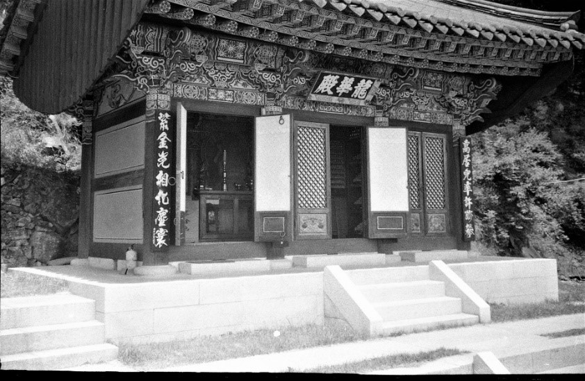
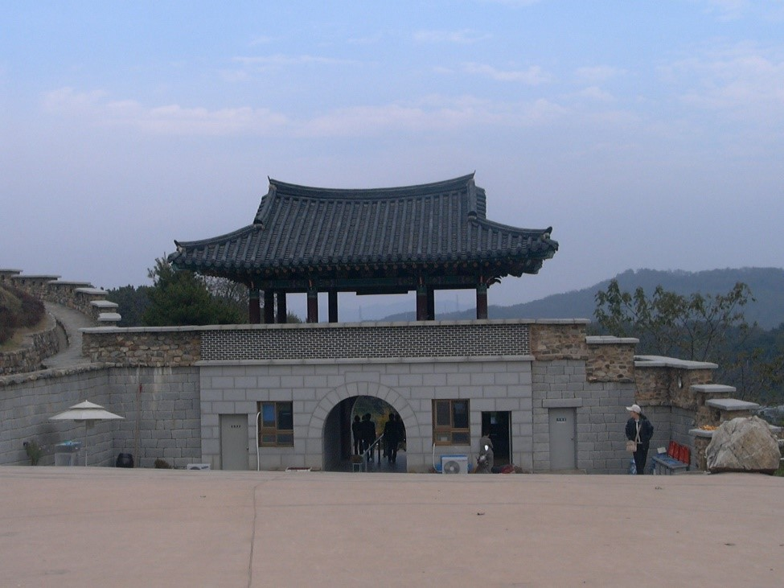
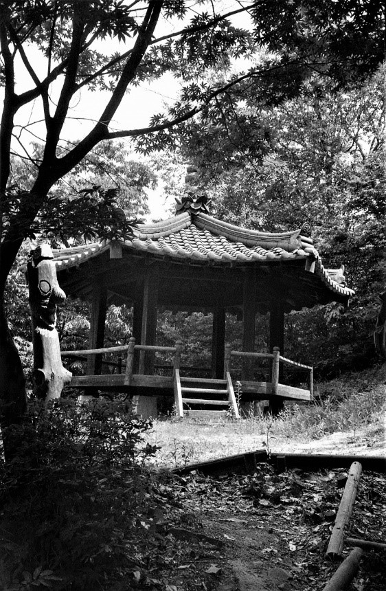
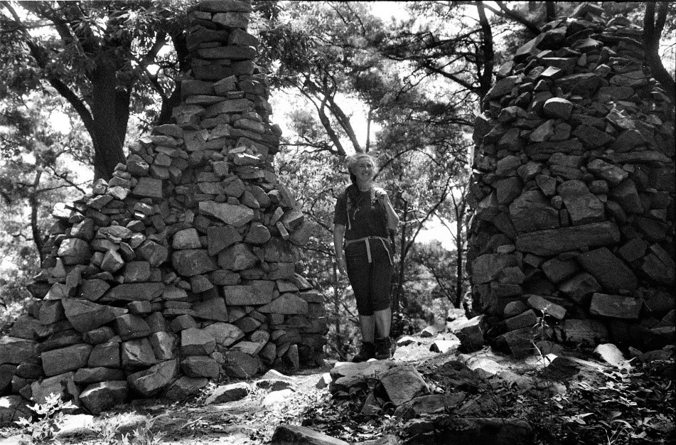
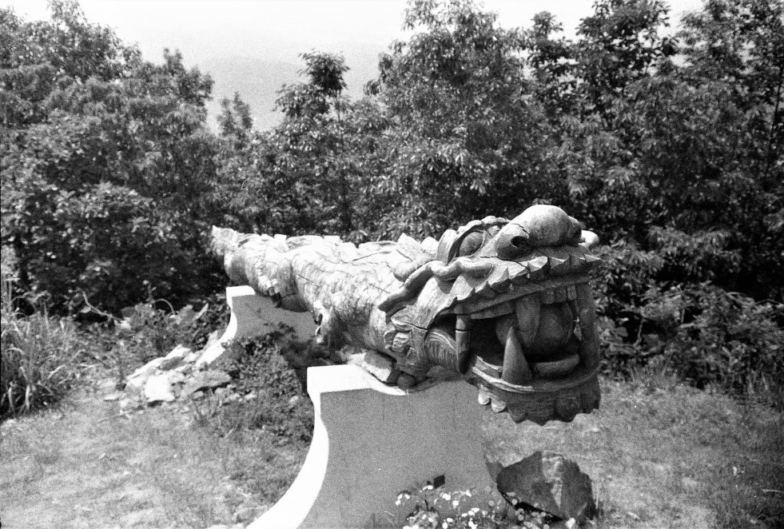
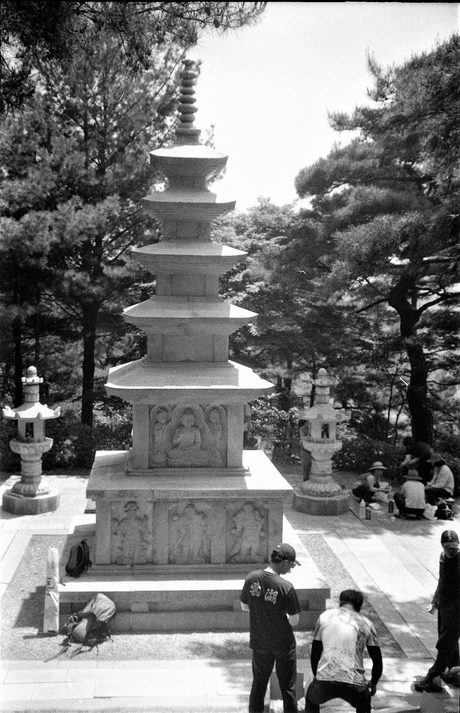

A bitterly cold hike

This hike was a particularly long hike that covered three mountains in the order as listed in the title.
None of the mountains were of any sizeable height but despite the sunny, clear day it was bitterly cold
at – 6 degrees C with a relentless wind that ensured you kept moving. We left the KAIST parking area on
schedule at 10:10 a.m. drove north and arrived at the parking area of Daejeon Reservoir Dam at 10:59. As
mentioned in the descriptions of hikes of YoungSeongSan (양성산) and Cheongnamdae president trails (청남대
대통령길), this area is noted for its spectacular scenery due to the man-made Daejeon Reservoir Dam which
created lakes out of rivers.
Model Cultural village

This also serves as the parking area for the model cultural village called 문의문화재단지 which is located in
the actual present village of 문의 Munui. If you have time this recreated village is well worth time for a
stroll through. Most of the buildings were saved prior to the construction of the dam and were chosen
for their history, fine construction and variety. The photo shows the gate at the entrance to the
village. One has the feeling that you are in a rural village of Korea one hundred years ago. The scale
is much smaller than other traditional style villages such as Andong (안동) or Suwon (수원) but the
buildings are authentic and less touristic. There are also artisans that you can watch making a variety
of items. I especially remember the blacksmith who was making garden implements and shovels which as I
remember were also for sale.
Pavilion

We walked up the road a little and reviewed our plan of the hike on the large map at the beginning of
the
trail. We then turned left up a really steep trail that led to the ridge and eventually to our first of
three peaks, KaJeungSan which has a large pavilion shown in the included picture, arriving there at
noon. At the pavilion there was a vendor selling hard boiled eggs and heated ramyeon (라면) soup. Alas it
was cold and windy so we briefly absorbed the scenery and kept moving. Once we were down the ridge a
little further we found a sheltered spot to stop and eat our lunch before continuing.
A comforting hot drink

Before long we continued along the ridge towards JakDuSan 430 meters (작두산) where there was a fellow
providing hot coffee. After indulging in a hot drink for a short moment we quickly moved on to the next
peak arriving at 13:15 p.m. Since there was still one more peak to conquer before heading home we turned
and continued our journey towards the last peak of the day which was YoungSeongSan 300.6 meters (양성산)
where there were the remains of a fortress (Seong, 성), dating back to 474 AD. For more detailed
information about this fortress please refer to a “Fortress on the summit” which is found under the
YoungseongSan (양성산) mountain description on this website. We made it to our final peak at 15:37 p.m.,
just over 2 hours from the previous peak giving you an idea of the rough nature of the rocky ridge.
The final stretch

From YoungseongSan (양성산) we veered ourselves down a path positioned in a deep valley with steep hills on
either side. As we approached the path to the city we turned right scrambling up to the ridge where a
vendor who spent his day hoping for customers was selling food and warm drinks. Finally, we plodded down
to the hill to the parking lot arriving at 4:00 p.m. marking the end of a tiresome, bone-chilling but
rewarding day.

This was a long arduous hike beginning with a rather steep trail up, continuing over the mountain to a
craggy but scenic rocky ridge that was hard to climb along because it the terrain was jagged boulders.
Then we went down a steep trail and up another steep trail to the next mountain. This was a rigorous
hike not because of the height of the mountains but because of the ups and downs on a very clear day yet
cold and windy day. Daejeon hikers also explored these same mountains in both April and August of 2009.